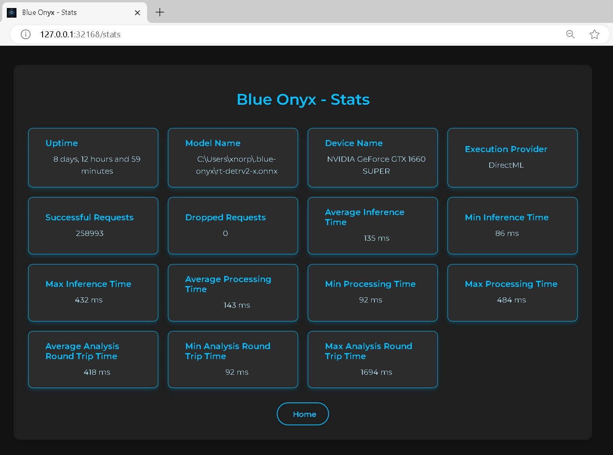

Statistics Page
Statistics are crucial for understanding your server's performance and identifying whether it is operating efficiently or experiencing overload. The statistics on this page can help you assess these aspects.
You can access the statistics page by default at: http://127.0.0.1:32168/stats
Stats

Uptime
The total time elapsed since Blue Onyx was started.
Model Name
The name of the model, which includes variations such as small (s), medium-small (ms), medium (m), large (l), and extra-large (x). Generally, larger models require more robust hardware and result in slower runtimes but provide higher object detection accuracy. It’s a balance between performance and resource requirements.
Device Name
The name of the device performing the inference.
Execution Provider
This acts as the bridge between the device and the ONNX model processing code. While GPUs typically offer faster performance, CPUs may outperform GPUs in certain scenarios. It's essential to benchmark and test on your specific hardware to determine the optimal choice.
Successful Requests
The total number of detection requests made from Blue Iris and the Test page.
Dropped Requests
The total number of detection requests made from Blue Iris and the Test page that got dropped. Having a few of these is not really a problem, it just means that at some point your service was overloaded. But if this keeps growing then it's an indication that the service cannot handle the amount of request sent to it. So either pace the sending (images from blue iris) or upgrade your hardware.
Timing Statistics
Lower values are better, as the goal is to process as many images as quickly as possible. Consider it in terms of frames per second (FPS). For example, if you have a video camera operating at 15 FPS, each frame must be processed in under approximately 67 ms to maintain real-time processing.
This processing is handled by a separate service that manages encoded JPEG images of various sizes. Therefore, processing speed depends on both image size and inference speed. Larger images take more time to decode and resize. For example:
- 4K Image: Decoding takes around 100 ms, and resizing to 640x640 takes an additional 10 ms.
- 640x480 Image: Decoding takes approximately 3-4 ms, and resizing takes about 1 ms.
It's crucial to monitor the total processing time of input images, not just the inference time. For instance, even if a Coral TPU processes an image in 5 ms, the overall time may still be 110 ms when accounting for decoding and preprocessing.
Key Points:
-
Average Analysis Round Time: The time from when the service receives a request to when it sends a response. If this time closely matches the processing time, it indicates that your server is not overloaded. The inference engine processes one image at a time, managed by a queue.
Examples:
- 1 request every 100 ms with a processing time of 100 ms: The average round-trip time will be approximately 100 ms.
- 2 requests every 100 ms: One request will be queued, waiting for the first to complete, resulting in a maximum round-trip time of 200 ms.
Formula:
Average Analysis Round Time = Queue Time + Processing Time -
Processing Time: Includes all image processing and inference activities, such as decoding, resizing, and inference.
-
Inference Time: The duration from when an image has been decoded and resized to 640x640 until the inference engine returns the boundary boxes. This specifically measures the time spent within the inference engine.
Recommendations:
- Optimize Image Resolution: If your processing time significantly exceeds inference time, consider using lower-resolution streams to reduce decoding and resizing overhead.
- Manage Request Rate: If your round-trip time is much higher than processing time, try to spread out requests to avoid overloading the server. While the server can handle the load by queuing images in memory, the inference engine might process images more efficiently in bulk once warmed up. Use the test client to stress-test and fine-tune this balance.
- Adjust CPU Threads: For CPU-based inference, you can control the number of threads used. Even if the queue and services run on a single thread, the actual CPU inference can utilize multiple threads for better performance.
Performance Goal: An average round-trip request time between 50 - 200 ms is generally acceptable. However, this can vary based on your specific setup and requirements.